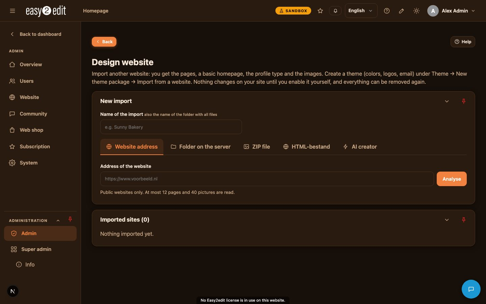
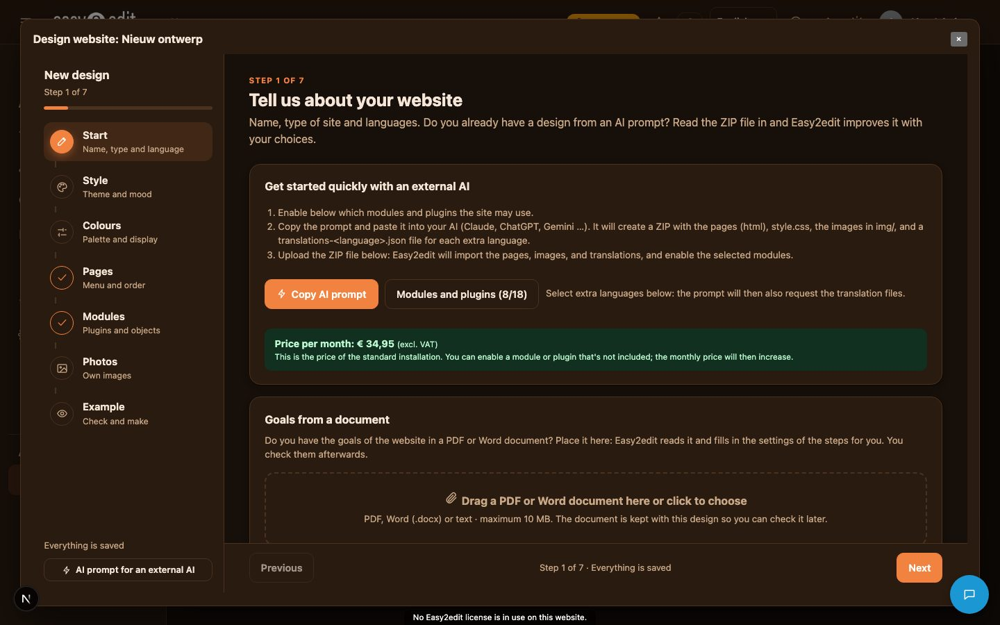

4. Importing a website (Site import)
easy2edit can turn an existing website into a working easy2edit site. You give it one or more HTML files, an address, a folder or a ZIP file, and the built-in AI reads it and prepares a proposal. Nothing is created on your site until you look at the proposal and approve it.
You find this feature under Admin > Imported. The button is called 'Site import' the first time you use it. Once a site has been imported, the same button is labelled 'Imported'.
Video: Importing a website (English voice-over also in Nederlands)
Video: Fill your website with AI (English voice-over also in Nederlands)

What the AI proposes#
After reading the file or files, the AI puts together a proposal that includes:
- A theme: colours, fonts, corner roundings and content width.
- The pages found in the file.
- The content of those pages.
- Icons and images, which are placed in the media library tagged 'import'.
- The modules needed to support the content, for example the FAQ module when the source site has a list of questions and answers.
You review this proposal before anything is built. Nothing is installed or created on your website until you approve.

Building a design with the AI creator#
Go to Admin > Imported > tab AI creator and choose New design to start a wizard. The wizard has seven steps: Start, Style, Colours, Pages, Modules, Photos and Preview. Everything you type is saved automatically as a concept. If you close the window while a design is still a concept, you are asked whether to save it (it stays under My designs), delete it, or carry on working.
The Start step contains a block called 'Quick start with an external AI'. It explains three steps:
- Choose the modules and plugins you want.
- Copy the prompt and paste it into an external AI such as Claude, ChatGPT or Gemini.
- Read the resulting ZIP file back into easy2edit.
The button 'Copy AI prompt' builds a prompt from all your choices and copies it to the clipboard. The button 'Modules and plugins (n/m)' lets you switch each module and plugin on or off. Modules and plugins that belong to your active standard installation are on by default. If you switch on something that is not part of your standard installation, a warning tells you that your monthly price goes up, and by how much, excluding VAT; the total monthly price of your installation plus the extras you picked is shown under the list. Only what is switched on is used in the prompt, by the external AI, and later during the import.
The prompt itself contains the design guidelines of the page editor (bands, hero, cells, cards, blocks), the rules the ZIP file must follow, and, for every extra language your website uses, the format of a translation file.
The ZIP file#
Whether it comes from the quick-start prompt or is built another way, the ZIP file read by easy2edit (tab ZIP file, or 'Read ZIP file' in the wizard) must follow these rules:
- At most 12 HTML pages. Every html file becomes a page, including pages that are only linked from the footer.
- One style.css file.
- A folder img/ with at most 40 pictures (jpg, png, webp or svg), each at most 5 MB. File names use only lowercase letters, digits, - and _, and are at most 40 characters long.
- Everything sits in the top folder of the ZIP; other folders are skipped, and the import notes mention what was skipped.
- Backgrounds set through CSS, including through CSS variables, are picked up. SVG files are cleaned.
- A file name that breaks the naming rule is renamed automatically, and every reference to it in the HTML and CSS is rewritten to match.
For each extra language, the ZIP can include a file named vertalingen-<code>.json, in the format easy2edit-vertalingen/1. It states the source language, the target language, and per page a list of items with the element, the source text and its translation. When the site is translated, texts from this file are used first; only missing texts are translated by the AI. The import notes report how many texts came from the file and how many from the AI.
Applying the import#
Once you approve the proposal, the theme is installed and put to use. Then the Apply panel opens, with tabs Pages, Links, Buttons, Header, Footer and Theme.
Pages: drag and drop between two columns, pages from the file on the left and pages of your website on the right, to link a file page to an existing page (for example Home) or keep it as its own new page. For each page choose the view:
- Exact: the page looks exactly like the HTML file. Texts and buttons can still be edited with the pencil in edit mode.
- Editable: the AI rebuilds the page using page builder blocks. Cards, label pills, band colours, rows and hero sections are rebuilt. Anything the blocks cannot reproduce, such as a progress bar, a checklist or preview cards, becomes an 'HTML / CSS code' block.
You can give the AI an optional instruction, for example 'make the headings bigger'. You also choose what happens to content already on the page: clear it first, replace only the blocks from this import, or add the new content below the existing content, and whether the pages should also be translated into your other languages.
Links and Buttons: link the links and buttons found in the file to pages or parts of your website by drag and drop.
Header: switch the system header to the header from the file, giving you the bigger menu with the file's links and buttons.
Footer: show the system footer underneath the imported pages.
Theme: adjust colours, default mode, content width and roundings.
Progress, status and re-applying#
While the import runs, a pop-up shows progress as a percentage. When it finishes, a 'Go to page' button appears. The original HTML is kept, so you can apply the import again later with a new instruction. Each import shows a status, either Pending or Active.
The list of pages belonging to an import shows, per page: name, whether it is in the menu, whether it is visible, and its view (Exact or Editable). In Pages > page settings, an imported page has an extra tab called Import, with a field for an instruction to the AI and a button to rebuild just that one page from the original file.
Removing an import#
Removing an import puts back the theme and the content that was previously on the pages, or advises you to reinstall via the superadmin if that is not possible, and removes everything the import created.
Note that the standard home page (logo, title, text, photos) is always empty by default, so an import always overwrites it and it never shows behind an imported page.